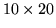

The ecolab model can run in multicellular mode by assigning to the dims. The model in equation 1 is replicated in each cell. The idea behind this is to set up a spatially dependent model. In case of two dimensional space, one can specify the x and y dimensions by assigning the following values as part of the input parameters §4.1:
set dims(x) 10 set dims(y) 20This specifies a

grid of 200 cells. The array indices ``x'' and ``y'' are purely arbitrary, one could use ``0'' and ``1'' instead.In the multicellular case, the number of species in each cell is set to be the value of the TCL variable nsp. In order to specify different numbers of species in each cell at initialisation, one can assign to the nsp array, in the following syntax (eg a 2D system):
set nsp(0,0) 10 set nsp(0,1) 12 set nsp(1,0) 15 set nsp(1,1) 13
One can also initialise other state variables with spatial dependence by appending cell indices, e.g.
set density(list,0,0) 100 set density(list,0,1) 100 set density(list,1,0) 100 set density(list,1,1) 100In this case, one may need to write a short TCL loop to intialise a particular pattern. This feature is not yet implemented as of version 3.2
Migration is performed using the migrate4.5.4 operator.